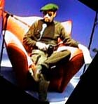
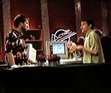
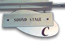

|
| ||
|
| ||
Robert Carter
August 21, 1997
The following article was originally published in Site Builder Magazine (now known as MSDN Online Voices).
Some random postcards from a backstage visitor to Microsoft's third annual World Wide Live, The Web The Way You Want It, broadcast August 21 via satellite around the world:
I'm with the bandHey, mom, that was me. I snuck into the Redmond, Washington studio where World Wide Live originated, and I saw at least two camera shots that included me. Did you see me waving? Party heartyWeb channels, explained Castedo Ellerman, are like a party invitation list. The party is going on in your computer, and a channel is someone you want to come to your party. Do somethingMichael Wallent, Microsoft's guru for Dynamic HTML, explained what DHTML makes possible in Internet Explorer: It treats everything on the page as an object -- and an author can do something with objects, be they fonts, images, or scripts. So what makes it "dynamic" is what you expose to the user. Count your blessingsFor online advertisers, Internet Explorer 4.0 has some very powerful capabilities. You can, said Castedo Ellerman, intelligently monitor page and ad-banner viewings on the client side. And just because a channel page is "pushed" doesn't mean it is viewed, off-line or online. The Channel Definition Format (CDF) files you use to create a channel in Internet Explorer also allow an advertiser to log when people view what you have pushed to their computer.  Been down this road beforeBetter navigation may not sound that exciting, but Joe Belfiore reminded us of all the times we've been surfing and just know we've visited a site but can't remember the URL. Internet Explorer 4.0's navigation bar remembers your URLs, lets you categorize visits within folders, even organize them by date. No more schlepping from search engine to search engine trying to remember the keywords you used. |
 Lost and found: ControlDesigners lost control in the move to Web-based communication: control over typography, image presentation, how the user views the page. Internet Explorer 4.0 restores the balance of power for designers, explained Nadja Vol Ochs, MSDN Online Network Magazine columnist extraordinaire. Font embedding, for instance. Finally, designers are wresting control from the "TriLateral Commission" of Times Roman, Arial, and Helvetica. Now, you can actually embed a font in your page - with, of course, appropriate permission from the font owner. The pause that reflowsMichael Wallent: Before Dynamic HTML, you "refreshed" a page. Now, you can "reflow" the page. Sic semper tyrannusInternet Explorer 4.0 has a customizable "favorites" menu, thus liberating the user from the tyranny of the bookmark programmer.  Familiar refrainsOkay, there were two crashes at World Wide Live this year; it wouldn't be a beta-software demonstration without them. Most amazing achievement: Only once in five hours did we hear the words, "Well, if this were working, you'd see ..." Windows 98Microsoft's upcoming Windows 98 will, reported Joe Belfiore, include a feature called the Update Manager, a built-in link to a Web site that can automatically review the capabilities of your particular operating system, and advise you of newer patches, drivers, and updates to improve performance. Other goodies coming in the new Microsoft OS: a Universal Serial Bus standard that will allow hot-booting hardware and eliminate IRQ conflicts; DVD support; multi-monitor viewing capability; television-computer integration so complete that the broadcast signal will include HTML. Who is this guy?Bill Gates was there, too, talking about how easily we forget how far Internet technology has come in just 10 years. What Web professionals are doing now, he observed, is giving users more control over the media they access. |
Robert Carter recently moved to the Pacific Northwest and refuses to support the Seattle rain misinformation campaign. Before writing and editing for MSDN, Robert worked as an emissions trader; he can spot a lot of hot air from 50 paces.
For technical how-to questions, check in with the Web Men Talking, the MSDN Online's answer pair.
Did you find this material useful? Gripes? Compliments? Suggestions for other articles? Write us!
© 1999 Microsoft Corporation. All rights reserved. Terms of use.